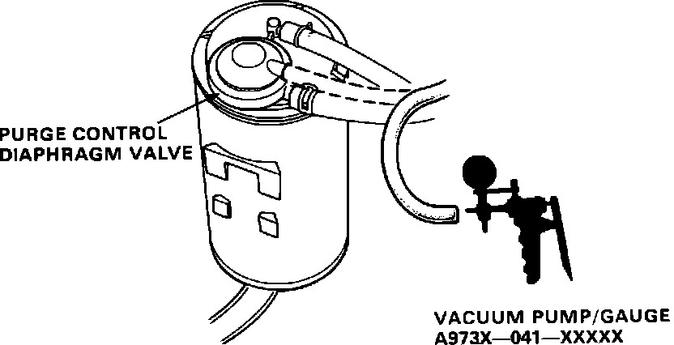
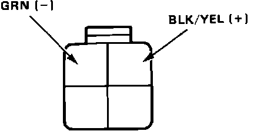

Canister Purge Solenoid: Testing and Inspection
Purge Cut-Off Solenoid Testing:

1. Disconnect purge control hose at charcoal canister and connect vacuum pump/gauge.
2. Start and idle engine. (Coolant temperature must be below 163°F or 73°C)
3. Check vacuum gauge.
Vacuum, proceed to next step.
No vacuum, proceed to step 10.
Purge Cut-Off Solenoid Connector Identification:

4. Disconnect solenoid 4 wire connector at firewall.
5. Check for voltage between BLK/YEL and GRN terminals.
Battery voltage, proceed to next step.
No battery voltage, proceed to step 7.
6. Inspect vacuum routing. If hoses check OK, replace purge cut-off solenoid. End of test.
7. Check for voltage between BLK/YEL terminal and ground.
Battery voltage, proceed to next step.
No battery voltage, proceed to step 9.
8. Inspect GRN wire for short to ground between ECU terminal A6 and solenoid. If wire checks OK, replace electronic control unit. End of test.
9. Repair open in BLK/YEL wire between solenoid and #24 fuse in underdash fuse box. End of test.
10. Let engine run until cooling fan comes on.
11. Shut off engine.
12. Restart engine and check for vacuum after 10 seconds.
Vacuum, proceed to next step.
No vacuum, proceed to step 14.
13. Purge cut-off solenoid functioning properly, for additional evaporative emissions system testing, refer to EMISSION CONTROLS. End of test.
14. Disconnect solenoid 4 wire connector at firewall.
15. Recheck vacuum gauge.
Vacuum, proceed to next step.
No vacuum, proceed to step 17.
16. Check for open GRN wire between ECU terminal A6 and solenoid. If wire checks OK, replace electronic control unit. End of test.
17. Check vacuum hose routing. If hoses check OK, replace purge cut-off solenoid.